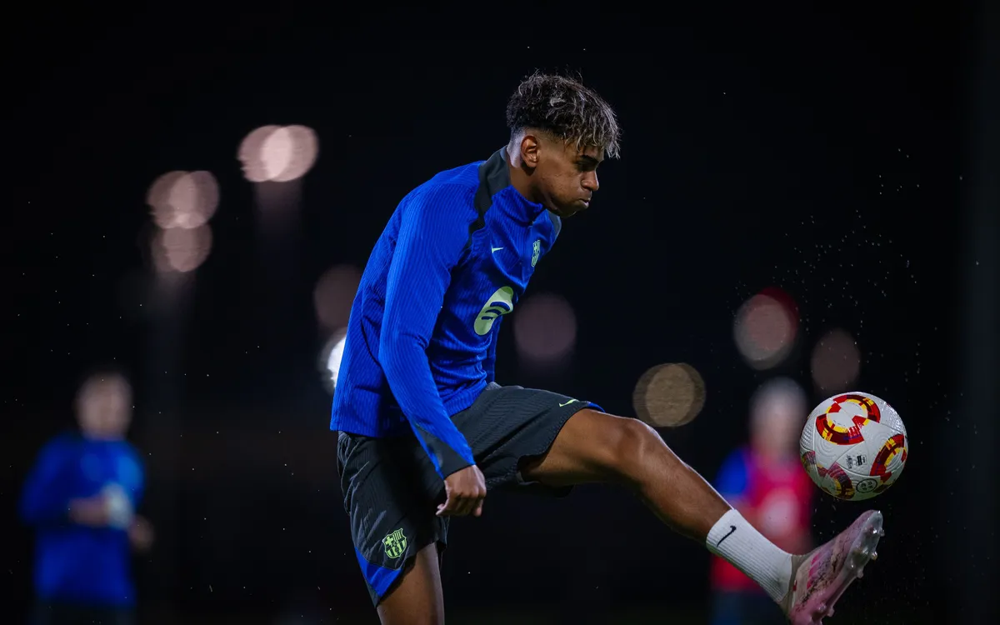

Lamine Yamal
Lamine Yamal, nacido el 13 de julio de 2007 en Mataró, España, es un joven
futbolista considerado una de las mayores promesas del FC Barcelona y del fútbol mundial.
De ascendencia marroquí y ecuatoguineana, debutó con el primer equipo del Barcelona en abril
de 2023,
convirtiéndose en el jugador más joven en la historia del club en hacerlo en LaLiga, con
solo 15 años.
Yamal se destaca por su habilidad técnica, visión de juego y madurez en el campo, cualidades
que le han
llevado a ser comparado con grandes figuras del fútbol. Además, representa a España en
competiciones
internacionales juveniles.